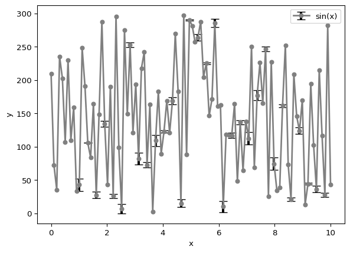

Simple Plot Types
Types of Plots
There exists are lot of different visualization techniques.
How you should visualize the data depends on the data and the question you want to answer.
Distributions can be visualized with a boxplot, a violinplot, a histogram or a density plot.
Relationships between two variables can be visualized with a scatterplot, a lineplot, a regplot or a jointplot.
Descriptions of the data can be visualized with a barplot, network plot or a pie chart.
Relationship plots
Scatter Plot
Scatter plot shows the relationship of observable over the abscissa e.g. time vs temperature as discrete function.
The scatter() function creates a scatter plot.
The marker size can be adjusted with the s parameter.
Line Plot
Line plot shows the relationship of observable over the abscissa e.g. time vs radioactivity decay as continuous function.
The plot() function creates a line plot but can also be used to create scatter plots.
The marker size can be adjusted with the markersize parameter.
Errorbars
Errorbars can be added to the plot with the errorbar() function and the yerr parameter.
import matplotlib.pyplot as plt
import numpy as np
x = np.linspace(0, 10, 100)
y = np.random.rand(100)*298
yerr = np.random.rand(100)*10
plt.errorbar(x, y, yerr=yerr, color='red', marker='o', label='sin(x)',markersize=5,linewidth=2)
plt.xlabel('x')
plt.ylabel('y')
plt.legend()
plt.show()
Distribution Plots
Histogram Plot
[Histogram] (https://matplotlib.org/stable/api/_as_gen/matplotlib.pyplot.hist.html) shows the distribution of a single variable e.g. count of a mass of individuals in a population. The data is divided into bins and the number of data points in each bin is plotted.
The hist() function creates a histogram with bins number of bins.
Boxplot
Box plot shows the distribution of a numerical variable for different categories. It shows the minimum, first quartile, median, third quartile and maximum of your data. Outliers can be identified. An example of this e.g. is the distribution of cancer cell survival time for different treatment groups.
The boxplot() function creates a boxplot.
2D Histogram Plot
A 2D histogram can be created with the hist2d() function.
Proportion Plots
Bar Plot
Bar plot shows the relationship of a categorical variable with a numerical variable e.g. cancer cell survival time for different treatment groups. The height of the bar is proportional to the value of the investigated variable.
The bar() function creates a bar plot.
Pie Chart
Pie chart show the proportion of different categories in a single variable e.g. the content of different amino acids in a protein.
The pie() function creates a pie chart.